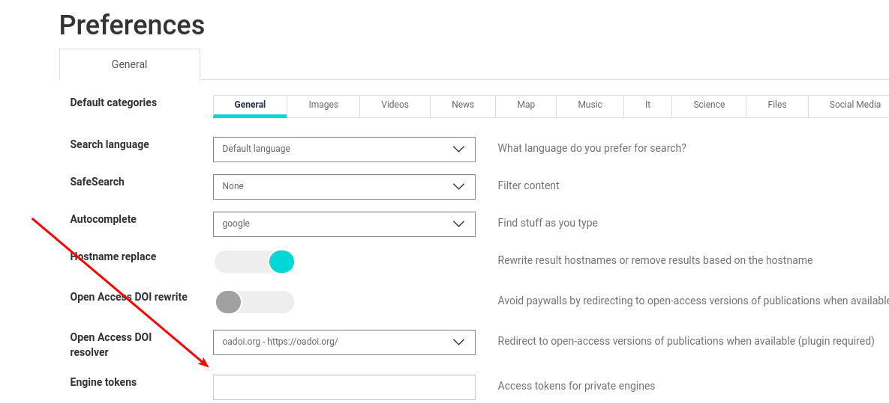

How to create private engines¶
If you are running your public searx instance, you might want to restrict access to some engines. Maybe you are afraid of bots might abusing the engine. Or the engine might return private results you do not want to share with strangers.
Server side configuration¶
You can make any engine private by setting a list of tokens in your settings.yml file. In the following example, we set two different tokens that provide access to the engine.
- name: my-private-google
engine: google
shortcut: pgo
tokens: ['my-secret-token-1', 'my-secret-token-2']
To access the private engine, you must distribute the tokens to your searx users. It is up to you how you let them know what the access token is you created.
Client side configuration¶
As a searx instance user, you can add any number of access tokens on the Preferences page. You have to set a comma separated lists of strings in “Engine tokens” input, then save your new preferences.
{kind=link}

Once the Preferences page is loaded again, you can see the information of the private engines you got access to. If you cannot see the expected engines in the engines list, double check your token. If there is no issue with the token, contact your instance administrator.